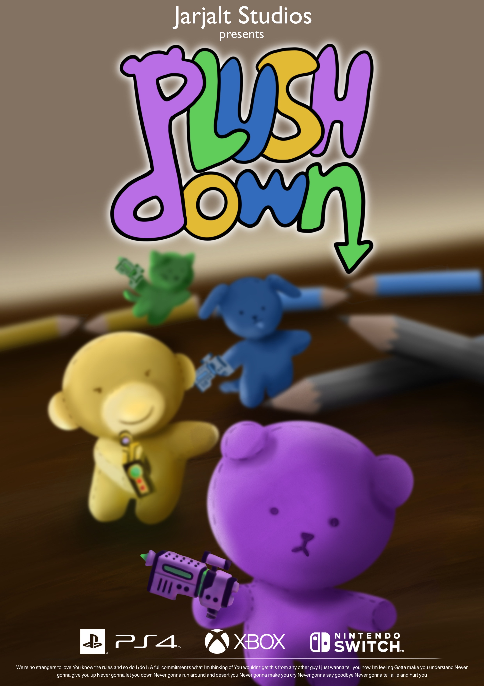

Game Concept
-
A lively and engaging multiplayer party game, whether played online or locally, with a central focus on arena shooting.
Featuring a whimsical and humorous aesthetic, the game aims to captivate a broad audience through its simple yet enjoyable gameplay.
Designed for up to four players on a single screen, the shared isometric camera perspective enhances the communal gaming experience.
-
The core mechanics involve basic actions such as shooting and walking, while additional nuanced sub-mechanics introduce elements like a
Trivia-Esque minigame or a King of the Hill game mode, providing diverse avenues for scoring points. Bullets exhibit dynamic behavior,
capable of bouncing a designated number of times off walls, adding an extra layer of strategy to the gameplay.
Diverse guns and items can be implemented to further enrich the gaming experience.
-
The game's duration is determined either by reaching a specific point threshold or a time limit,
with players equipped with Health Bars and the ability to respawn indefinitely, ensuring an ongoing and
entertaining gaming session.
My Participation
-
In this project, my role as a Game Designer centered around various key responsibilities. Primarily, I undertook comprehensive market research, delving into the gaming landscape to understand current trends, player preferences, and potential opportunities.
-
Conducting a SWOT analysis allowed me to assess the project's strengths, weaknesses, opportunities, and threats, providing valuable insights for strategic decision-making. Utilizing the Lean Canvas framework, I worked on crafting a concise and clear business model, outlining key aspects such as customer segments, value propositions, and revenue streams.
-
The formulation of game rules and mechanics was a critical aspect of my role, shaping the fundamental structure and interactive elements of the game. This involved defining how players would navigate and engage with the game environment, ensuring an intuitive and enjoyable user experience.
-
Additionally, I took charge of developing the Game Design Document (GDD), a comprehensive blueprint that encapsulates the entire game concept. This document served as a reference point for the team, detailing aspects like game objectives, character profiles, level design, and overall narrative, providing a unified vision for the project.
-
Overall, my responsibilities as a Game Designer spanned from strategic analysis to the fine details of game mechanics, ensuring a cohesive and well-defined foundation for the development and success of the project.
Game Design Document